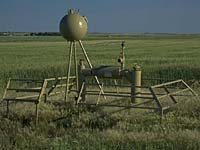
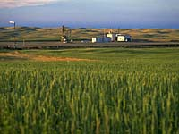
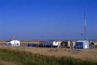

History Records of drilling in Saskatchewan indicate that the first well was drilled by the Geological Survey of Canada at Fort Pelly in 1874/75 and the second at Fort Carleton in 1875. Depths reached 153 m and 53 m respectively. Around 1883, Canadian Pacific Railway made several "borings" at Grenfell, McLean and Belle Plaine to obtain water. An account of the well at Belle Plaine, which reached 473 m, describes a "small gas flow" and is probably the first record of hydrocarbon in the province. From 1900 to 1919, fourteen wells were drilled and from 1920 to 1929, eighteen; all wells were unsuccessful. Saskatchewan's first successful commercial natural gas well was drilled in 1934, in the Lloydminster area. Exploration and development has grown substantially over the years, resulting in an increase in the number of natural gas discoveries and successful gas-producing operations. Until 1987, Saskatchewan production was insufficient to meet total provincial requirements, therefore, gas was also purchased from the neighboring province of Alberta. Since 1987, many industrial, commercial and institutional customers within the province entered into direct sales contracts with natural gas producers in Saskatchewan, Alberta and British Columbia. A significant new in-province gas market has emerged as a number of large gas consuming industries commenced operation between 1988 and 1992: NewGrade Upgrader, Millar Western pulp mill, Weyehaueser paper mill, Saskferco fertilizer plant and the Bi-Provincial Upgrader. TransGas significantly expanded their natural gas transportation system in 1988, 1989, 1992, and 1995 to accommodate the growth of the industry in the province.
DescriptionNatural gas is a mixture of light hydrocarbon molecules, predominantly methane (CH4). It exists in a gaseous state at ordinary temperatures and pressures. Most of the gas produced in Saskatchewan is dry sweet gas which requires limited processing.
LocationThe areas in which gas is located are primarily located along the extreme western edge of the province. Most of Saskatchewan's non-associated natural gas is produced from relatively shallow reservoirs ranging in depth from 275-760 metres (900-2,500) feet.
|
Mining Natural gas is also produced in association with oil. The gas liquids are stripped from the gas and sold separately from the dry gas. Natural gas reserves in Saskatchewan can readily be connected via the TransGas system to the TransCanada PipeLine system, the Foothills Pipe Line system, and the Williston Basin Interstate Pipeline system to allow delivery of gas to external markets.
Producers of Natural GasMost of the natural gas produced by oil and gas companies in Saskatchewan is transported from the producing fields by TransGas Limited, a subsidiary of SaskEnergy Inc.. TransGas collects the gas through its pipeline gathering system and transports ot to SaskEnergy's distribution system for sales to customers within Saskatchewan or tho the pipelines of TransCanada Pipelines Ltd. and Foothills Pipe Lines Ltd. for out-of-province sales. There were approximately 7,500 producing gas wells in the province at year-end 1995.
Uses for Natural GasNatural gas is used mainly as a heat and energy source and as part of some manufacturing processes. As a heat and energy source, natural gas is one of the cleanest and most efficient. Natural gas may also be converted to other products. For example, the Co-op heavy oil and refinery complex uses natural gas as a component of the motor gasoline it produces.
|
Economic Impact for Saskatchewan Saskatchewan was a net importer of natural gas until 1987. Saskatchewan's natural gas industry has expanded greatly in recent years with 1995 gas sales six times the 1983 sales. Saskatchewan gas is sold to gas utilities such as SaskEnergy and directly to consumers. SaskEnergy sells the gas to residential, farm, commercial and industrial customers in Saskatchewan. The province is now a net exporter, selling more to eastern Canada and the United States than is imported from Alberta. Currently, over 50% of gas production is sold to markets outside Saskatchewan. The significant growth in Saskatchewan's gas industry has had a positive impact on the province's economy Saskatchewan's natural gas production is expected to remain stable over the next year, as the wells drilled and brought on-stream replace declining production from existing wells.
Innovations and TechnologyResearchers are looking for ways to make Canada's non-renewable energy reserves last longer. The federal Department of Energy, Mines and Resources (EMR) has a number of ongoing research projects aimed at finding cleaner and more efficient ways of using non-renewable energy resources and reducing overall consumption. EMR projects such as the R-2000 Homes and the Advanced Houses programs are aimed at improving energy efficiency in homes in various climatic regions of the country. The department also researches ways of using solar, wind and biomass energy.
The Future: How Much is Left?Natural gas established reserves for Canada were 2700 billion cubic metres at the end of 1991, a decline of roughly 4%, or 123 billion cubic metres, from the 1988 level. Based on production, these reserves should last 24 years at the 1991 rate of usage and exports (including shrinkage at all plants that extract natural gas liquids). Other sources of energy must be considered including renewable resources such as biomass, wind, solar, hydro and so on. SaskEnergy has been directed by the government to have 10 to 15 years supply available to its over 300,000 customers.
|